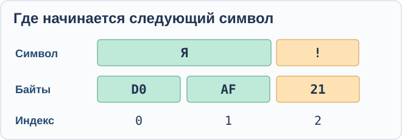

Строки
Строка std::string хранит последовательность элементов типа char. В слове robot пять букв. Чтобы получить третью, укажи индекс 2.
| Индекс | 0 | 1 | 2 | 3 | 4 |
|---|---|---|---|---|---|
word[i] |
r |
o |
b |
o |
t |
Создание и ввод строки
Для std::string нужен заголовок <string>. Одинарные кавычки обозначают символ: 'a'. Двойные — строковый литерал: "abc".
#include <iostream>
#include <string>
using std::cin;
using std::getline;
using std::string;
string word = "robot";
string line;
cin >> word; // Одно слово до пробела.
getline(cin, line); // Остаток текущей строки.
Если ввести blue sky, то word получит "blue", а line — " sky" с пробелом в начале. Если сразу после слова нажать Enter, line будет пустой.
После std::cin >> number символ конца строки остаётся во входном потоке. Если нужно читать следующую строку, сначала убери остаток текущей. Например, если число стоит отдельно на своей строке:
// Заголовки <iostream>, <limits> и <string>.
using std::cin;
using std::getline;
using std::numeric_limits;
using std::streamsize;
using std::string;
int number;
string line;
if (cin >> number) {
cin.ignore(numeric_limits<streamsize>::max(), '\n');
getline(cin, line);
}
Такой вариант сохраняет начальные пробелы и пустую следующую строку. Если остаток строки после числа тоже нужен, не отбрасывай его.
Чтение и изменение символов
Разберём операции на строке text = "robot". Каждая строка таблицы начинается с этого исходного значения.
| Запись | Результат |
|---|---|
text.size() |
5 |
text[0] |
Символ 'r' |
text.at(1) = 'u'; |
"rubot" |
text + " arm" |
Строка "robot arm". Сама text сохраняет своё значение |
text.append(" arm"); |
text становится "robot arm" |
text.push_back('!'); |
"robot!" |
text.pop_back(); |
"robo" |
text.substr(1, 3) |
Копия участка "obo" |
text.insert(2, "X"); |
"roXbot" |
text.erase(1, 2); |
"rot" |
text.replace(1, 2, "AA"); |
"rAAot" |
В substr(match_index, count), erase(match_index, count) и replace(match_index, count, replacement) второй аргумент — число символов. Если нужна подстрока с индексами от left до right включительно, количество символов равно right - left + 1. Обращайся к символам только при индексе меньше text.size(), а pop_back() вызывай для непустой строки. После правок строки проще получить итераторы заново.
У обычной std::string индекс обозначает элемент типа char. Для ASCII-строки это отдельный символ. В UTF-8 одна русская буква может занимать несколько элементов, поэтому посимвольные примеры здесь используют ASCII.
Что именно читает процессор. Возьмём строку u8"Я!" в C++17 на компьютере с восьмибитным байтом. Текст содержит два символа, а std::string text = u8"Я!"; сохраняет три байта текста. Буква «Я» записана двумя байтами UTF-8, затем идёт байт восклицательного знака. В схеме значения байтов указаны в шестнадцатеричной системе.

Что лежит в text[i]?
Введи короткий текст, затем выбери любой байт. Для кириллицы и эмодзи сравни индекс байта с порядковым номером кодовой точки Unicode.
Команда чтения text[1] обращается ко второму байту буквы «Я». Чтобы найти начало следующего символа, программе нужно учесть правила UTF-8. При чтении байта процессор сам буквы не распознаёт.
Поиск подстроки
text.find("ab") возвращает индекс начала первого совпадения. text.rfind("ab") при вызове без начальной позиции ищет последнее совпадение. Если соответствующего участка нет, возвращается std::string::npos.
#include <iostream>
#include <string>
using std::cout;
using std::string;
auto match_index = text.find("ab", 2); // Искать начиная с индекса 2.
if (match_index != string::npos) {
cout << match_index << '\n';
}
Используй auto или std::string::size_type для позиции и сравнивай с npos до обращения к строке. В двухаргументном вызове второй аргумент — начальная позиция поиска.
В перегрузке с символьным массивом text.find("abcd", 1, 2) поиск стартует с индекса 1, а третий аргумент говорит взять первые два символа образца. То есть здесь ищем "ab".
Число и его десятичная запись
std::to_string(42) возвращает "42". std::stoi("42") возвращает целое 42. stoi умеет прочитать начальную числовую часть: для "42cm" результат тоже будет 42. Если нужен контроль, передай адрес переменной std::size_t used вторым аргументом и проверь, что used == text.size() для непустой входной строки. При отсутствии читаемого числа или выходе за границы int функция выбрасывает исключение.
Сортировка
По итераторам строки работают sort, count, find, reverse и другие знакомые алгоритмы. std::sort(text.begin(), text.end()) сортирует символы внутри строки, а std::sort(words.begin(), words.end()) для вектора строк сортирует целые строки лексикографически. При одинаковом начале более короткая строка идёт раньше.
Замена и сортировка символов
#include <algorithm>
#include <iostream>
#include <string>
using std::count;
using std::cout;
using std::sort;
using std::string;
int main() {
string route = "BABA";
auto first_match = route.find("BA");
auto last_match = route.rfind("BA");
if (first_match == string::npos || last_match == string::npos) {
return 1;
}
cout << first_match << ' ' << last_match << '\n';
route.replace(last_match, 2, "AZ");
sort(route.begin(), route.end());
cout << route << '\n';
cout << count(route.begin(), route.end(), 'A') << '\n';
}
У BABA два вхождения BA, в позициях 0 и 2. Замена второго на AZ даёт BAAZ. После сортировки буквы стоят в порядке AABZ, из них две — A.
0 2
AABZ
2
← Массивы, векторы и итераторы · → Алгоритмы стандартной библиотеки и лямбды